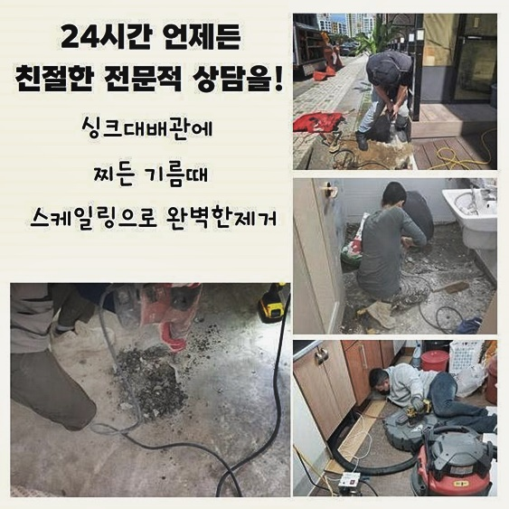
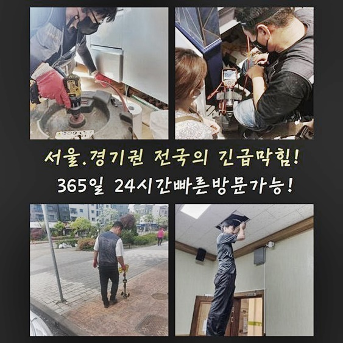
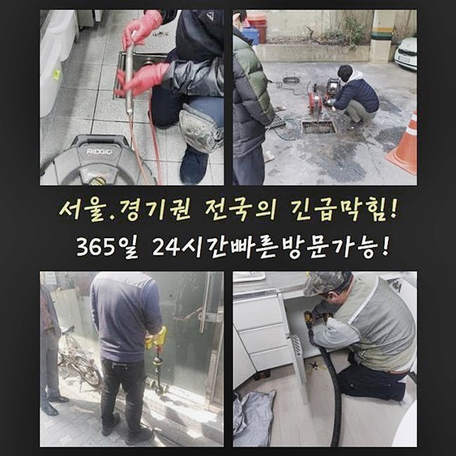
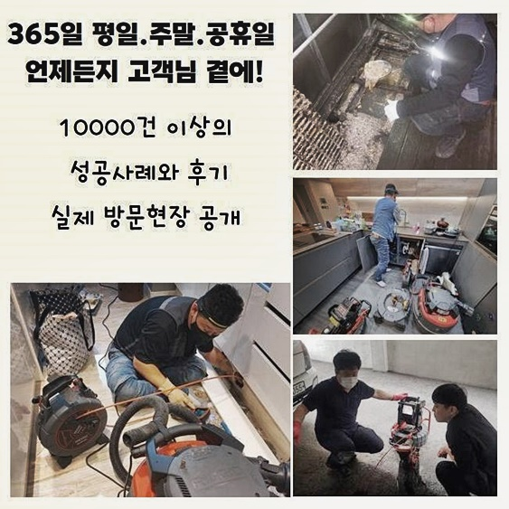
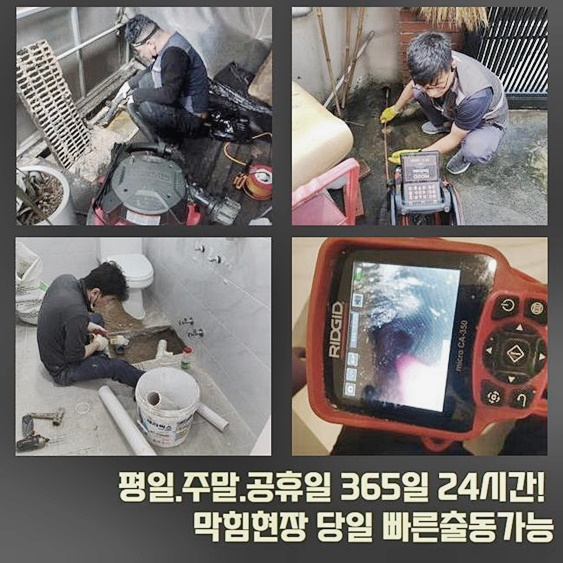
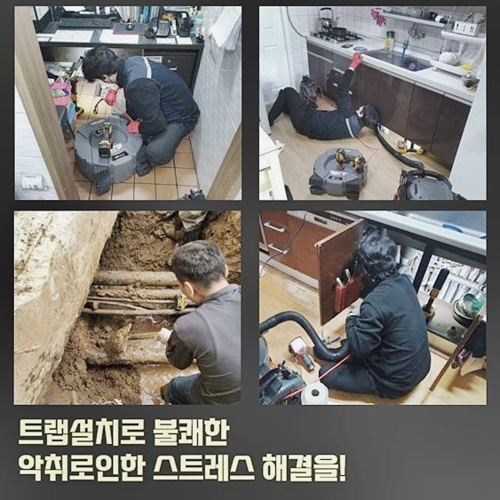

🏠 부천 심곡본동하수구역류 송내동 하수구청소 통수전문
용인 하수구막힘 전문 시공 후기

📋 작업 개요
- 위치: 용인
- 서비스 유형: 하수구막힘, 배관막힘, 역류해결, 뚫는업체, 배관청소, 고압세척
- 작업 일시: 2024. 7. 26. 21:51
- 업체명: 하수구수사대 (010-5615-2118)
🔍 문제 상황
부천 심곡본동하수구역류 송내동 하수구청소 통수전문
자주 발생되는 배수구와 연관된 문제들을 완화시키고 청소하는 배관 해결사입니다
여러분이 불러주시면 언제든지 여러 내용에 있어서 도움을 드립니다
갑자기 욕실쪽에서 배수구가 이상하다는 증상으로 신속히 해당 위치로 당도했는데요
욕실의 경우라면 이용하고서 머리카락등과 여러가지의 잔해가 침전되어 통수에 불능이 야기되는 현장들도 많습니다
이런 문제에선 주위에서 구입가능한 개체로는 배수문제를 시정해내는게 어렵기에 뚫을땐 전문성이 뛰어난 장비를 이용하여 문제양상을 보이는 위치를 세척하는 것이 중요합니다
자주는 아니지만 끓고있는 수돗물을 부은 뒤 문제들을 없애보고자 진행하는 고객님들도 계십니다
이런 대응법도 해결을 꾀하기가 힘듭니다
수도를 끓여서 배출시키면 이물은 이전보다 더 굳는 특징을 가지고 있어서 배관 컨디션을 악화시켜요
이같은 사항으로인해 하수구의 증세는 성능들이 최고수준인 장비를 통해야되겠습니다
수리 진행 시 쓰는 장비를 점검을 위해 확인하고 고객이 말씀하신 현장으로 빠르게 달려갔죠
쉽게 해결되는 하수구의 증세를 각론하고 말씀드렸다시피 머리카락뭉치와 석회질 성분의 이물이 켜켜히 쌓이죠

🔎 원인 분석
💡 전문가 진단: 정밀 진단 장비를 사용하여 슬러지의 고착 여부를 판명하고 타격/세척 작업을 실시했습니다.
그래서 주기를 설정해 관리법 실시를 해줘야합니다
의뢰자분껜 작업방식을 고지하고 바로 증세를 살펴 불편을 무슨 방법을 통해 해결하는지 세밀하게 안내할 예정입니다
증세가 심각한 지점은 화장실쪽에 매립된 바닥부분이였어요
관찰 결과 일반적인 사각형태의 부속품은 아니었고 트렌치부품으로 육안으로 드러났죠
배수장애와 예기치못한 물이 솟아오르는 증세도 지속되고 있었습니다
보통의 경우 트랩부속을 통해 하수관로로 안빠진 이물은 걸러진 후 이물을 제외한 물들은 배수관으로 보내주는 순기능을 하죠
허나 내부에 있던 이물이 배관 위로 역류이슈를 불거지게해 트랩설비도 제 기능을 수행할 수 없는 상황이었는데요
고객님은 증세들이 심해지고 샤워실을 전혀 쓸 수 없겠다고 불편들을 털어놓으셨는데 상당히 불편했을것으로 보여졌습니다
위처럼 욕실쪽의 하수라인에서 증세가 발생된다면 여러방면에서 피해가 불거질거에요
이때문에 조속하고 명확하게 증세를 해소하는게 가장 필수적이죠
문제 시정을 위해선 증세들의 근원지부터 아는것이 중요해요
상단의 시야확보 부품이 접착된 내시경장비로 하수관로로 투입시킬 때에는 이물의 위치를 주시해주며 작업 계획을 세워 수리를 하게되죠
해당 이점으로 상당수의 증상들이 발생되면 필수적으로 써야하는 장치입니다

🔧 작업 과정
초입부부터 잔여물이 상당했던 탓에 기기를 하수관으로 투입시키는게 곤란했어요
그럼에도 증상에 있어서 좌절할 수 없습니다
지속적인 시도끝에 비로소 장비라인을 넣었고 심부까지 관찰할 목적으로 영상을 체크하다가 제대로 보이지를 않았습니다
벽면쪽엔 잔여물이 심했죠
또한 안쪽지점을 선명하게 관찰이 안되는걸로 미루어봤을땐 바깥부분도 깊숙한 부분에도 많은 양의 슬러지가 쌓여진걸 확인했죠
지속적으로 배수구로 내시경을 넣으니 벽면쪽엔 형체가 불분명한 것이 확인되었죠
배수관의 끝에는 뒤엉킨 모습으로 누적된 이물이 확인되었어요
기기를 투입해봐도 배수공간들은 보이질 않았으나 고착화된 이물은 확연하게 보였습니다
이물이 구간별로 존재했고 고착화된 잔해가 하수관로의 끝머리서부터 쌓여버린걸 파악했습니다
문제가 심각했던 곳이었으나 고객의 의뢰였기떄문에 해당 문제들을 바라만 볼 수 없었죠
하수도에 쌓인 이런저런 잔여물은 손을통해 걷어내주고 배수관 안에 쌓여버린 이물의 경우엔 샤프트 장비를 통해서 깨끗하게 해줄 예정이였죠
성능좋은 도구들을 이용하였기에 신속하게 시정했어요
그럼에도 이물들을 청소하면서 이해가 되지 않던 요소가 존재했어요
어떠한 까닭으로 장판의 일부분이 하수도에서 존재하는건지 알기가 어려웠습니다
위와같은 문제를 확인하고 작업을 하다보니 고객분은 이러한 내용을 운을 떼기 시작하셨어요
듣고보니 한달전쯤 도배를 수행했는데 예상컨대 조각이 하수도로 흘러들어간걸로 파악된다고 전달하셨어요
작업들이 끝났을땐 잔해물은 전문가가 버려야되지만 간혹 정리하는것에 등한시하는 전문진일 시엔 이곳에서처럼 전문적이지 못하게 잔해수도를 흘려보내요
종합적으로 생각해보면 저희업체가 달려갔던 곳에서부터 위의 문제때문에 불편을 지속적으로 받아오고 계셨습니다
여기저기 장판오염물이라는 폐기물들이 배수과정을 이뤄지지못하게 하면서 나갔어야하는 하수가 흘러나가질 못했어요
꾸준한 이물청소와 석션과정까지 거치니 마침내 하수관을 뚫었죠


✅ 작업 완료
배수과정이 제대로 진행되는지 체크도 거치니 빠른 속도로 통수가 이뤄졌죠
제대로 청소가 되었다면 오늘과같이 빠지는게 정답이지만 하수도가 여러 이물질로 막히게되며 배출이 안되고 솟구치기까지 한것입니다
갖가지의 장소를 찾아뵈었지만 이러한 문제를 마주할때면 기분이 좋지않고 고객분이 감수해야되는 피해에 깊은 공감이 되는데요
이것처럼 오류들을 말끔하게 시정하고 저희전문진도 뒷정리를 하고 철수할 수 있었어요
예기치못하게 만약 문제들이 생겨난다면 저희의 안내를 초고로하여 안정적으로 처리하시는 게 합리적입니다!
이외에 의문들이 존재하신다면 빠르게 전화를 걸어 질문을 하셔도 좋으니 아무쪼록 상담을 원하신다면 의뢰인분에게 도움이 되겠습니다




⚠️ 하수구 배관 막힘 예방 및 관리 가이드
- ✅ 머리카락, 비닐, 물티슈 등 물에 분해되지 않는 이물질은 하수구 유입을 절대 금지해 주세요.
- ✅ 하수구 거름망을 씌우고 모여진 이물질은 주기적으로 쓰레기통에 바로 비워주셔야 합니다.
- ✅ 배관 노후가 심할 경우 이물질이 더 쉽게 걸리므로 주기적인 배관 세척(고압세척 등)을 권장합니다.
- ✅ 작업 후 1년 이내 재발 시 하수구수사대에서 무상 A/S 보증 서비스를 제공합니다.
💡 핵심 정리
- 확실한 장비 작업(내시경 점검 및 샤프트 스케일링)으로 원인을 뿌리 뽑습니다.
- 작업 후 1년 이내에 동일한 부위 재발 시 100% 무상 A/S 서비스를 보장합니다.
- 서울 · 경기 · 인천 전 지역에 24시간 언제든 긴급 출동할 수 있도록 항시 대기 중입니다.
❓ 자주 묻는 질문 (FAQ)
🚨 용인 하수구막힘 문제로 고민이신가요?
정확한 원인 진단과 확실한 시공으로 재발 없는 해결을 약속드립니다.
24시간 긴급 출동 | 서울 · 경기 · 인천 전지역 | 1년 내 재발 시 무상 A/S